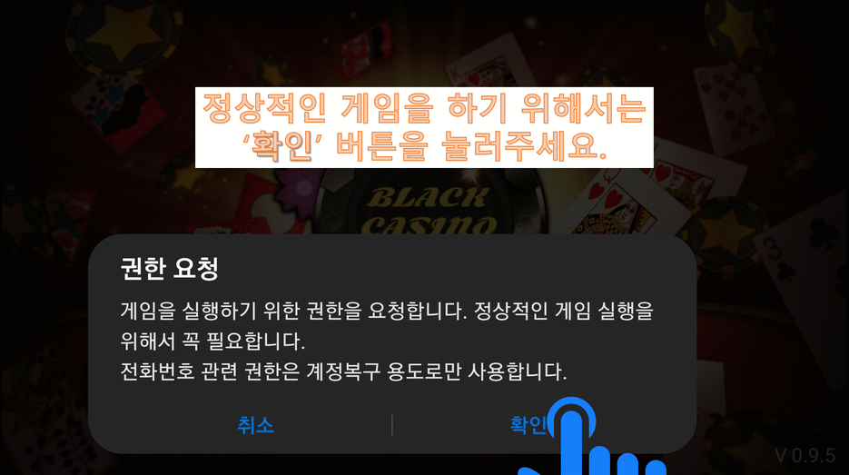

Coin Power
Coin Genesis
Coin Power Company
PowerCoin은 사람들의 SNS 부분을 통합하여 Genesis 를 시작합니다. PowerCoin은 탈중앙화 암호화 화폐입니다.
파일 설치하기
Coin Genesis 설치 순서
이곳에서 게임 설치 파일을 클릭해서 설치를 진행해야 합니다.

게임 실행에 필요한 Coin을 충전 요청해야 합니다.
요청한 Coin을 실제로 받아야 합니다.